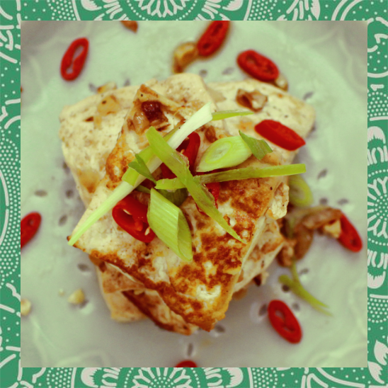
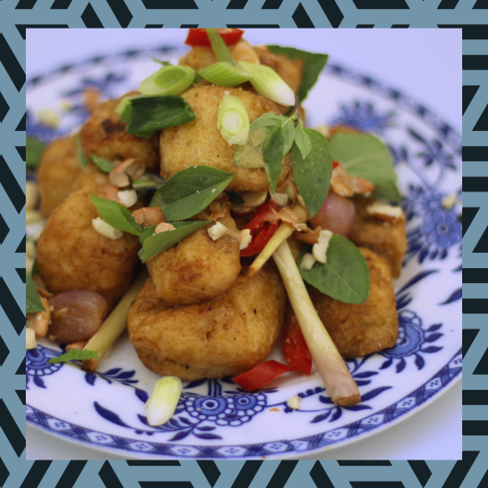
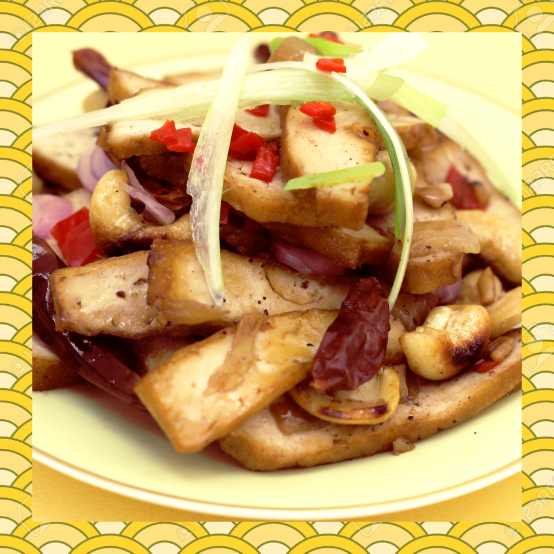

KOREAN MA PO TOFU
Silken tofu in an intense sauce of Gochujang (Korean red chilli paste) and Szechuan pepper. The traditional Mapo tofu with a Korean twist!
CHINESE HOMESTYLE-TOFU
Firm tofu with the flavours of traditional Chinese home-cooking: ginger, garlic, soya sauce and sesame oil. With just enough crisp and honey-glaze, deliciously simple and satisfying.


VIETNAMESE TOFU
Packed with the powerful, fresh flavours of lemongrass and lime, a dash of miso for depth of flavour, and a sprinkling of crushed peanuts.
KUNG PAO TOFU
Extra-firm, marinated tofu stir-fried with whole, dried chillis and cashew nuts. Spicy, warming and moreish.
